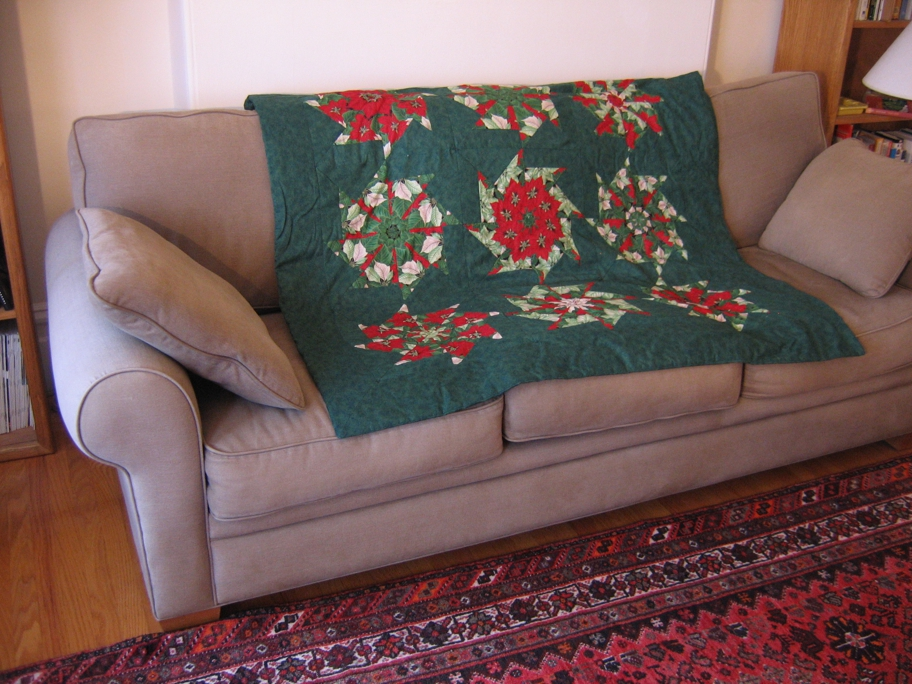

The Christmas quilt is an example of creative problem solving. It started out as a project for two tree skirts with a free pattern, using stack and whack technique, from Hancock Fabrics. The poinsettia fabric was flawed so the number of blocks I was able to make from the good part determined what I would do. It became a small quilt. That year stack and whack was such fun that I made about seven different ones from Thanksgiving to Christmas. It is addictive but I'm cured. Other projects diverted me.